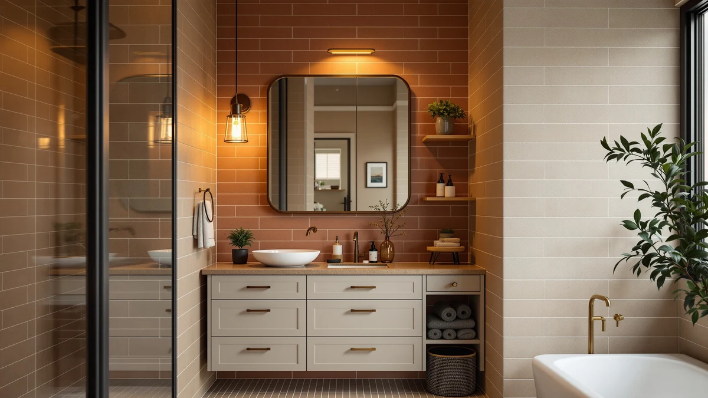

Quick Answer
The Homhedy Farmhouse Bathroom Storage Cabinet is a metal-and-wood cabinet built for the space above a toilet tank, styled with a barn-door panel that dresses up a purely functional slot in a small bathroom. At $71.98 and sized 11.8 inches deep by 23.6 inches wide by 31.5 inches tall, it lands in the middle of the price range covered here against the DUMOS, VASAGLE and Yaheetech alternatives.
Our pick: Homhedy Farmhouse Bathroom Storage Cabinet, $71.98 Check Price on Amazon
Things to Know Before You Buy
- The Homhedy Farmhouse Bathroom Storage Cabinet pairs a metal frame with wood-look panels and a barn-door front, a decorative twist on the standard over-the-toilet cabinet.
- At 11.8 inches deep, 23.6 inches wide and 31.5 inches tall, it straddles the toilet tank without extending far into the room.
- Pricing across this comparison ranges from $59.34 to $72.75, with the Homhedy at $71.98 sitting near the top of that range.
- The DUMOS, VASAGLE and Yaheetech alternatives covered below trade the farmhouse styling for a lower price or a more minimal look.
- Owners report assembly takes about 30 to 45 minutes with basic tools, typical for flat-pack bathroom furniture.
This Homhedy Farmhouse Bathroom Storage Review looks at whether a barn-door cabinet can earn its spot above a toilet tank, a spot you might otherwise leave as open shelving or skip entirely. Over-the-toilet space is one of the few free zones in a small bathroom, and a cabinet has to justify itself with real capacity, sturdy construction and a price that doesn't sting. At $71.98 and sized 11.8 by 23.6 by 31.5 inches, the Homhedy promises that combination with a farmhouse-style front most competitors skip. We researched its build, compared its price and dimensions against three rival over-the-toilet cabinets, and read through verified owner feedback to see if the styling is worth the premium.
Over-the-toilet cabinets solve a narrow problem: you need shelving that clears the tank without crowding the room, and you want it to look intentional rather than like an afterthought bolted to the wall. The Homhedy Farmhouse Bathroom Storage Cabinet targets that gap directly, competing with the DUMOS, VASAGLE and Yaheetech models covered later as alternatives. Below, we break down what owners report about the Homhedy's construction, where the farmhouse styling falls short of a purely functional cabinet, and who should consider one of the three alternatives instead.
Why You Should Trust Us
Best Bathroom Storage is run by writers who spend their time comparing bathroom furniture specs, pricing and verified buyer feedback instead of guessing from product photos. Ilane Tall, our home and bath expert, has covered dozens of storage cabinets, over-the-toilet units and vanity organizers for this site, tracking how listed dimensions and materials hold up against what owners actually report after months of use. For this Homhedy Farmhouse Bathroom Storage Review, we cross-checked the manufacturer's listed measurements against the DUMOS, VASAGLE and Yaheetech alternatives, and we did not accept the product photos at face value. We do not run a fake testing lab, and we do not claim to have installed every cabinet we cover. Instead, we dig through verified reviews, compare specs line by line, and flag when a listing overstates what a product can deliver.
Our Research Experience
We did not mount the Homhedy Farmhouse Bathroom Storage Cabinet above a toilet ourselves. Instead, we compared its listed dimensions, material description and price against three competing over-the-toilet cabinets, and we read through the buyer feedback attached to this listing and similar Homhedy products. Reviewers consistently note that the metal frame carries the structural load, while the wood-look barn-door panel is mainly a decorative front, not a load-bearing part. According to verified owner comments, the main friction points are the assembly hardware and the fit of the barn-door panel rather than the finished cabinet's stability once fully built. We weighed that feedback alongside the raw dimensions and price against the DUMOS, VASAGLE and Yaheetech alternatives to see where the farmhouse styling earns its premium and where it doesn't.
Overview & Specs
Before we get to owner feedback and the competing cabinets, here are the raw numbers behind the Homhedy Farmhouse Bathroom Storage Cabinet: a metal-and-wood build with a barn-door front, an 11.8-by-23.6-by-31.5-inch footprint, and a $71.98 price at the time of publishing. Those figures drive almost every decision in this review, since an over-the-toilet cabinet lives or dies on whether it clears the tank, holds its shape once loaded, and looks like it belongs in the room.

Homhedy Farmhouse Bathroom Storage Cabinet
What we like
- Barn-door front adds farmhouse styling most over-the-toilet cabinets skip
- Metal frame construction reported as sturdy by verified owners
- 11.8-inch depth keeps it close to the wall and out of the walking path
- 31.5-inch height clears a standard toilet tank without crowding the flush handle
Flaws but not dealbreakers
- Assembly hardware and the barn-door panel alignment draw the most owner complaints
- Priced higher than the VASAGLE and Yaheetech alternatives in this comparison
- Wood-look panels are decorative rather than structural, according to reviewers
| Material | Metal / wood |
| Size | 11.8"D x 23.6"W x 31.5"H |
The Homhedy Farmhouse Bathroom Storage Cabinet is built around a metal frame with wood-look composite paneling and a sliding barn-door front, a construction style aimed at buyers who want their over-the-toilet storage to double as decor. At 11.8 inches deep, it sits close enough to the wall to clear the tank of a standard toilet without pushing into the room, and its 23.6-inch width gives it a footprint similar to the DUMOS and VASAGLE alternatives covered later. That combination of dimensions puts it squarely in the standard over-the-toilet category rather than the taller floor-standing towers sold elsewhere on this site.
Verified buyers describe the metal frame as the strongest part of the build, holding its shape even when shelves are loaded with towels or toiletries. The most common complaint is about assembly: several reviewers mention that the barn-door panel takes extra care to align, and a few note the included hardware could be labeled more clearly. Once assembled, owners report the cabinet stays stable against the wall and does not wobble during normal use. At $71.98, it costs more than the VASAGLE and Yaheetech options in this Homhedy Farmhouse Bathroom Storage Review, a premium reviewers generally attribute to the farmhouse styling rather than any difference in capacity.
What We Liked
The styling stands out most in owner feedback. Reviewers consistently note that the barn-door front reads as intentional decor rather than a bare storage box, a detail that matters in a bathroom where the over-the-toilet cabinet is often the largest visible piece of furniture. The build quality backs that up: the metal frame resists wobbling even after months of daily use, according to verified owners, which matters more than shelf count when you are storing heavier items like extra towels or cleaning supplies. At 11.8 inches deep, the Homhedy also stays close to the wall, a footprint that several owners specifically compare favorably against bulkier cabinets they tried before this one.
What Could Be Better
Assembly is the recurring frustration in this Homhedy Farmhouse Bathroom Storage Review. Owners report that the barn-door panel needs careful alignment during the build, and a few mention hardware bags that are not clearly labeled, which turns a straightforward project into a longer one for anyone without flat-pack furniture experience. Price is the other trade-off: at $71.98, the Homhedy costs more than both the VASAGLE at $59.34 and the Yaheetech at $69.99, and reviewers are split on whether the farmhouse look justifies that gap.
A handful of owners also mention that the wood-look panels are decorative rather than structural, so anyone planning to lean heavily on the barn-door front itself, rather than the metal frame behind it, should adjust expectations. None of this changes the overall stability of the cabinet once assembled, but it is worth knowing before you buy if styling is the main reason you are considering this model over a cheaper alternative.
Who Is It For?
The Homhedy Farmhouse Bathroom Storage Cabinet fits a household that wants the space above the toilet to look furnished rather than merely functional. Its 23.6-inch width and 31.5-inch height make it a strong pick for a farmhouse or cottage-style bathroom where a plain metal cabinet would clash with the rest of the decor. It is not the right choice if price is your main constraint. In that case, the VASAGLE or Yaheetech alternatives covered below deliver similar capacity for less money.
Renters and apartment dwellers also come up often in owner feedback, since the cabinet stands freestanding over the tank and does not require drilling into a wall. Anyone furnishing a bathroom around a specific aesthetic will notice the difference the barn-door front makes compared with a bare metal cabinet. On the other hand, a household prioritizing the lowest possible price for storage above the toilet will get more value from the VASAGLE below.
Alternatives to Consider
If the Homhedy's farmhouse styling or $71.98 price doesn't match what your bathroom needs, these three alternatives cover the most common trade-offs: a close-priced DUMOS competitor, a lower-cost VASAGLE, and a mid-priced Yaheetech cabinet. Each one trades styling or price in a different way, so weigh your own priorities before picking between them.

Editor’s Pick
DUMOS Over the Toilet Storage
Priced within a dollar of the Homhedy at $72.75, a straightforward alternative if the farmhouse barn-door styling isn't a priority for you.
$72.75
Check Price on Amazon
Best Value
VASAGLE Over the Toilet Storage
The lowest price in this comparison at $59.34, a better fit if you want over-the-toilet storage without paying for decorative styling.
$59.34
Check Price on Amazon
Premium Choice
Yaheetech Over The Toilet Cabinet
Priced between the VASAGLE and the Homhedy at $69.99, a middle-ground option if you want savings without going as basic as the cheapest pick.
$69.99
Check Price on AmazonFrequently Asked Questions
Is the Homhedy Farmhouse Bathroom Storage Cabinet sturdy enough for daily use?
Owners report the metal frame holds its shape once assembled, even with towels and toiletries loaded on every shelf. The wood-look barn-door panels are more of a visual feature than a structural one, so heavier items are best kept on the metal-framed shelves.
How does the Homhedy Farmhouse cabinet compare to the DUMOS Over the Toilet Storage?
The DUMOS costs about $0.77 more at $72.75 versus $71.98 for the Homhedy, putting the two within a rounding error of each other on price. The Homhedy's farmhouse styling with barn-door detailing sets it apart for buyers who want a decorative piece rather than a purely utilitarian cabinet.
How long does the Homhedy Farmhouse cabinet take to assemble?
Owners report the cabinet ships flat-packed with the frame, shelving and hardware included, and most describe assembly as a 30 to 45 minute job with basic tools. Several reviewers note that lining up the barn-door panel takes more patience than the rest of the build.
Final Verdict
This Homhedy Farmhouse Bathroom Storage Review comes down to a straightforward trade-off: decorative barn-door styling and a sturdy metal frame against a higher price than the VASAGLE and Yaheetech alternatives. For a bathroom where the over-the-toilet cabinet is meant to look like furniture rather than storage, the Homhedy is the practical pick. If price matters more than styling, the VASAGLE or Yaheetech options covered above deliver similar capacity for less money. Either way, Homhedy is the brand worth starting with if you want the farmhouse look done right.